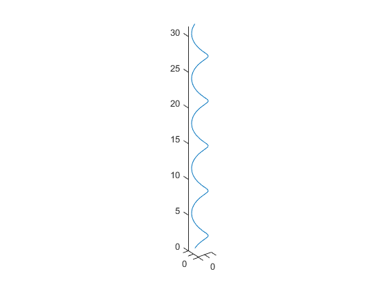

[X,Y]=meshgrid(-2:0.2:2); Z=X.*exp(-X.^2-Y.^2); % subplot(3,2,4) % surf(X,Y,Z) % % subplot(3,3,3) % mesh(X,Y,Z) t=0:pi/50:10*pi; st=sin(t ); ct=cos(t); figure plot3(st,ct,t) axis equal % t = 0:0.0001:1; %方波时域长度1秒 % w = 2*pi*2; %方波频率2Hz % A = 5; %方波幅值为5 % subplot(2,1,1); % for n = 1:500 %采用5组正弦波形 % plot(t, 4*A/pi*1/(2*n-1)*sin((2*n-1)*w*t)); % hold on % end % title('n组正弦信号') % % subplot(2,1,2); % sum=0; % for n=1:500 % sum = sum+4*A/pi*1/(2*n-1)*sin((2*n-1)*w*t); % end % plot(t,sum)